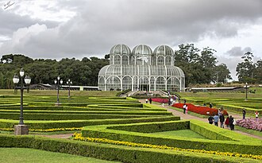
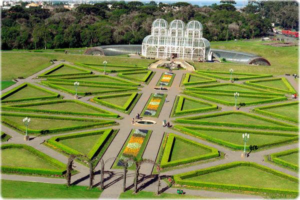

Jardim Botânico de Curitiba e curiosidades
O Jardim Botânico de Curitiba é um dos pontos turísticos mais famosos da capital paranaense e foi inaugurado em 1991. Seu principal destaque é a estufa de vidro, inspirada nos jardins franceses e na arquitetura do Palácio de Cristal de Londres, onde são cultivadas diversas espécies de plantas da Mata Atlântica. O local também possui jardins geométricos, trilhas, lagos e um espaço dedicado à pesquisa e à educação ambiental. Entre as curiosidades, a estufa se tornou um dos maiores símbolos de Curitiba e o jardim recebe milhares de visitantes todos os anos, sendo um dos locais mais fotografados da cidade.

Contexto histórico
O Jardim Botânico de Curitiba foi criado em 5 de outubro de 1991 com o objetivo de preservar espécies vegetais, promover pesquisas científicas e oferecer à população um espaço de lazer e contato com a natureza. Sua construção fez parte de um conjunto de iniciativas voltadas para o planejamento urbano e a preservação ambiental, características pelas quais Curitiba se tornou reconhecida nacional e internacionalmente. Desde sua inauguração, o Jardim Botânico passou a desempenhar um papel importante na conscientização sobre a conservação da biodiversidade.

Importância cultural
O Jardim Botânico de Curitiba possui grande importância cultural e ambiental, pois reúne lazer, educação e preservação da natureza em um mesmo espaço. O local recebe turistas, estudantes e pesquisadores, incentivando o conhecimento sobre a flora brasileira e a importância da conservação do meio ambiente. Além disso, sua beleza arquitetônica e paisagística faz dele um dos principais cartões-postais da cidade, contribuindo para o turismo, a valorização do patrimônio natural e a identidade cultural de Curitiba.

curiosidades
curiosidades 1
escreva sua cuiosidade sobre o
curiosidades 3
infor interessante